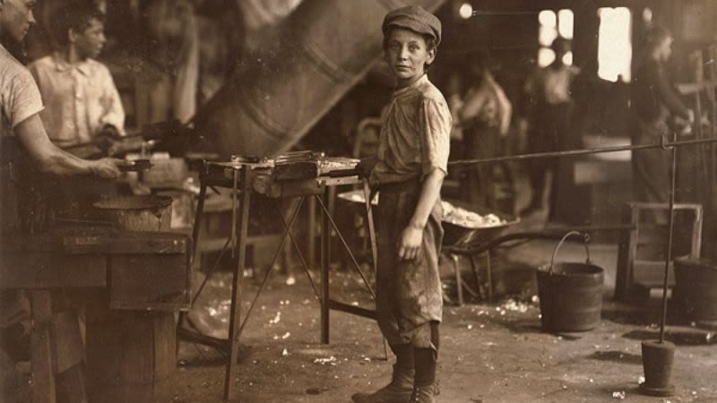

A Timely Solution

In our Child Labor Projects, we analyzed photographs of children in factory work during the industrial revolution, and used both our understanding of the photographs and knowledge from secondary sources to create a poem and art piece.


Click the Poem to view the full doc!
Click the Collage to view the full piece!

Click the Artist's Statement to view the full doc!

For our Social Media Projects, we selected a topic relating to social media and researched it using articles. We then used our information to create a poem and collage based on our topic.
Click the Poem to view the full doc!

Click the Artist's Statement to view the full doc!